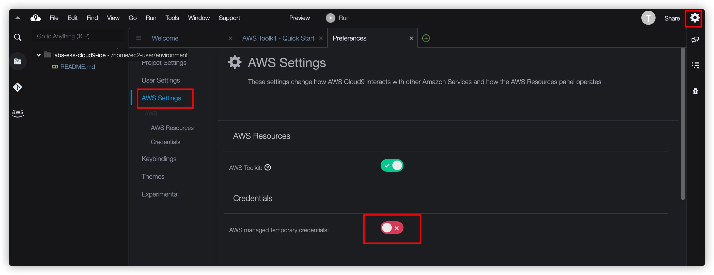

001-准备基础设施
这是这个Workshop的第一步，先准备网络和管理工具。
实验描述
本动手实验部署创建VPC，通过使用CloudFormation在实验环境中部署以下内容：
网络基础
- 创建一个包含公有、私有子网的VPC
- 公有子网: 分别位于两个不同的可用区，该子网内的资源会暴露在互联网上，可被用户或客户端直接访问。用于部署NAT Gateway, 堡垒机，ELB负载均衡器等。
- 私有子网: 分别位于两个不同的可用区，该子网内的资源无法直接被互联网上的用户直接访问。用于部署Web应用服务器，中间件服务，数据库服务等无需直接暴露在互联网上的服务。
- 多个安全组: 用于控制EKS集群/EC2网络传入和传出流量。
- Network ACL: 网络访问控制列表，可用作防火墙来控制进出一个或多个子网的流量。
- Cloud9: 云IDE，便于在云上直接管理相关集群。
部署步骤
- 下载如下的yaml文件到本地操作的电脑客户端
-
打开 CloudFormation 控制台，并创建新的堆栈：
-
在“准备模板”部分，保留缺省的“模板已就绪”选项。然后在"模板源"部分，选择"上传模板文件"单选框，点击【选择文件】按钮，并选择第一步中下载的CloudFormation yaml文件。点击【下一步】按钮。 输入以下的相关的参数，并点击【下一步】按钮。
- 堆栈名称：输入
ContainerWorkshop
-
其他选项按照默认即可，点击【下一步】按钮。
-
在“配置堆栈选项”页面上，保留缺省值，并点击【下一步】按钮。 在“审核”页面上，勾选“我确认，AWS CloudFormation 可能创建具有自定义名称的 IAM 资源。”
-
点击【创建堆栈】按钮，并等待此模板的创建执行完毕，此过程大概约5分钟左右。
- 在等待资源创建的过程中，可以先往下创建IAM角色
- 创建完成后，输出内容如下：
查看资源
进入VPC控制台： https://console.aws.amazon.com/vpc/home?region=us-east-1#vpcs:
- 查看创建好的VPC，子网，路由表，安全组，Internet Gateway，NAT Gateway等资源。
IAM配置
- 创建角色
ContainerAdminRole - 附加权限
AdministratorAccess
Cloud9环境配置
AWS Cloud9 是一个基于云的集成开发环境 (IDE)，您只需使用浏览器即可编写、运行和调试代码。它包括代码编辑器、调试器和终端。Cloud9 预先打包了适用于常用编程语言的基本工具和预安装的 AWS 命令行工具 (CLI)。
-
进入Cloud9控制台，点击第一步CloudFormation输出里的“Cloud9URL”，或者 https://console.aws.amazon.com/cloud9/home?region=us-east-1 刚部署好的 cloud9 干净环境如下：
-
点击CLoud9环境中右上角的图标，选择管理EC2实例（Manange EC Instance）
-
在接下来打开的窗口中，关联Cloud9的EC2实例和刚才创建的角色
- 此处为：ContainerAdminRole，如下图所示（仅供参考，因为每个人部署的实例ID不一样）
-
关联后保存即可

-
仍然在EC2控制台，操作更改安全组
-
添加三个安全组后保存
- 搜索
ControlPlaneSecurityGroup - 搜索
SharedNodeSecurityGroup - 搜索
ExternalSecurityGroup以ControlPlaneSecurityGroup为例
最后绑定安全组类似如下（其中第一个是默认的）：
这里仅仅是为了实验方便，所以Cloud9 IDE 承担了很多角色，为了方便连通各个服务才绑定这么多安全组
- 更新Cloud9的环境配置
- 在Cloud9环境中，选择右上角的设置按钮，关闭：AWS managed temporary credentials 
- 然后删除临时的credentials
- 在Cloud9 IDE 下方的命令行窗口执行以下命令
rm -vf ${HOME}/.aws/credentials